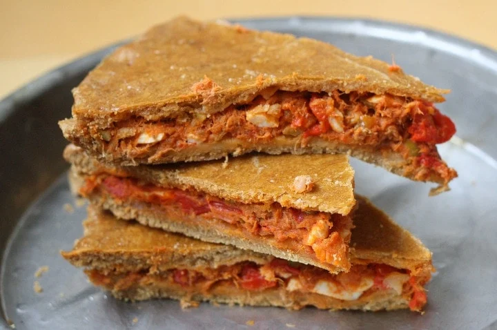

Tuna Empanada Recipe

Description
Try this authentic baked tuna empanada recipe for a
delicious and homemade Galician empanada.
Ingredients
For the dough:
- 1 egg
- 1 teaspoon baking soda
- 1/2 cup olive oil
- 1/2 cup Spanish hard cider a dry cider or a dry white wine
- 1/2 teaspoon salt
- 2 1/4 cups of flour you may need more to roll the dough later
- 1 egg separated
Empanada filling:
- 1 large onion chopped
- 1 cup of roasted red peppers drained and roughly chopped
-
1.5 cups of tomate frito a homemade tomato sauce made with sautéed tomato,
garlic, onion and pepper that is pureed with a bit of sugar --
you can substitute diced tomatoes and one tablespoon brown sugar
- 2 tablespoons of olive oil
- 14 ounces of canned tuna drained
- 24 chopped green olives the manzanilla variety if buying in Spain
- 2 hard boiled eggs chopped
-
1 teaspoon Worcestershire sauce or anchovy paste you can always
mash up a cured anchovy here
- 1 tablespoon honey
- 1 teaspoon sweet paprika
- 1 teaspoon cumin
- Salt to taste
Steps
-
To make the pastry dough, beat the egg in a large bowl and add in the baking soda,
olive oil, wine or cider and salt.
-
Add in the flour, little by little, and when it gets too difficult
to continue mixing with a fork, use your hands. It should be a soft dough
(but not sticky). Make it into a ball and cover in plastic wrap for one hour
at room temperature.
-
To make the filling, heat about two tablespoons of olive oil
in a heavy frying pan and cook the onions until soft and starting to caramelize.
Add in the roasted red peppers and fry for another two minutes or so, and then
add the tomato sauce.
- Lower the heat to a slow simmer and cook for about 15 minutes, stirring often.
-
Add in the tuna, chopped olives, chopped eggs, Worcestershire sauce
(or anchovy paste), honey and paprika.
Taste and adjust the salt.
-
Preheat the over to 350°F (175°C) and divide the dough in half,
with one half slightly bigger than the other.
Grease an 11 inch pan with oil and roll out the larger half of the dough
so that will completely cover the bottom of the pan and the edges.
-
Using your rolling pin, transfer the dough to the pan
and gently mold it to fit the pan without stretching the dough.
Trim the edges if necessary.
- Beat the egg white and brush over the the dough.
- Bake the base for 10 minutes and then remove and let cool.
- Once cool enough (10 to 15 minutes) cover with the tuna filling.
-
Roll the other half of the dough large enough the cover
the top of the empanada and make sure the edges meet.
- Brush the empanada with the beaten egg yolk mixed with one teaspoon of water.
- Bake in the oven for 40 minutes and serve hot or cold.